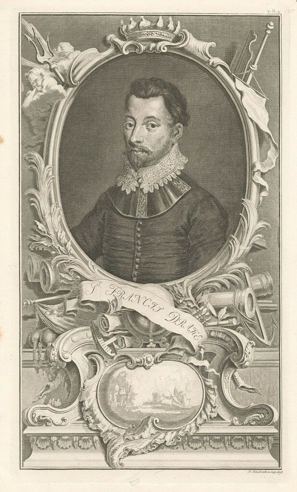
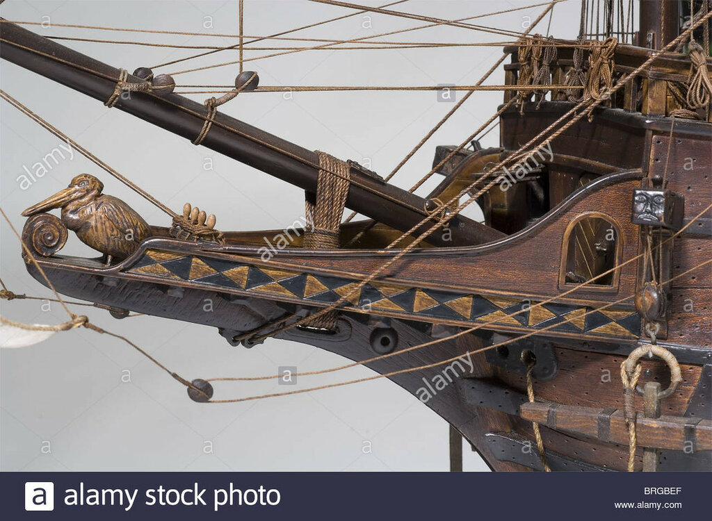
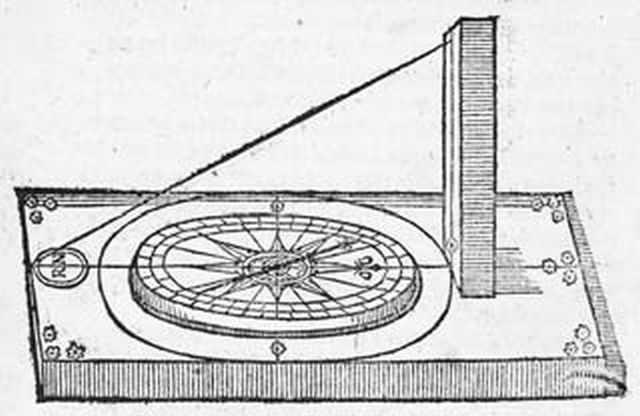
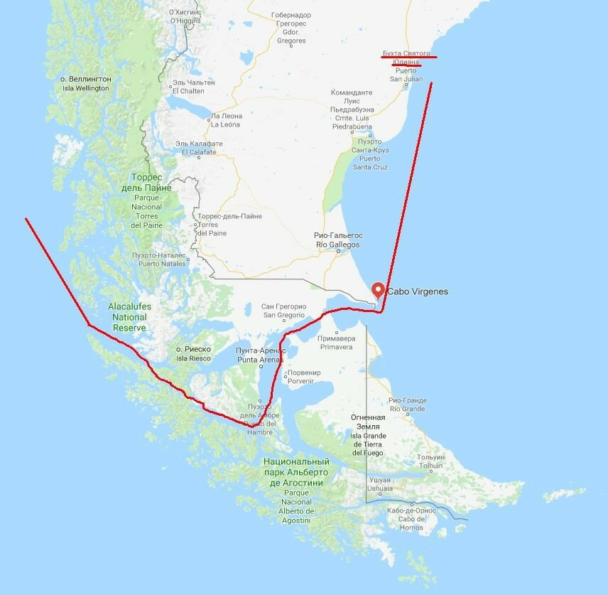
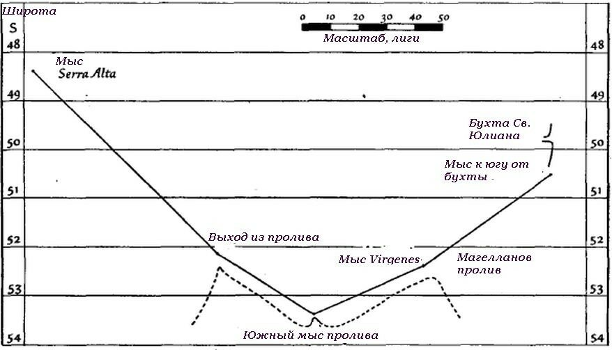
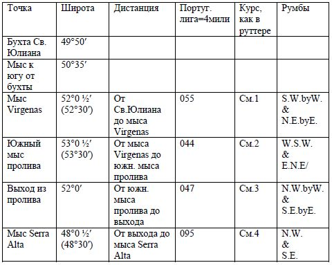
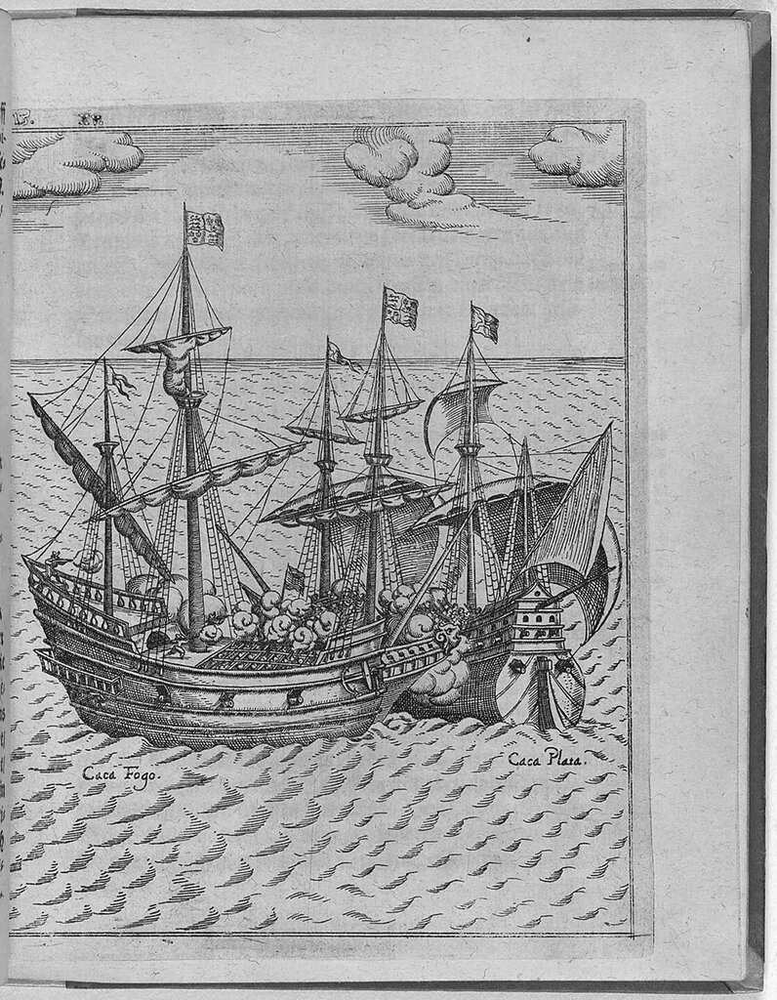

После краткого обзора искусства навигации в эпоху Дрейка и становления навигационных пособий, или лоций, той эпохи, обратимся к конкретному примеру штурманского обеспечения кругосветного плавания Дрейка.

Портрет Дрейка (1777) Гравюра Jacobus Houbraken. The pictorial field-book of the Revolution. Vol. 2
Прежде всего мы должны вспомнить, что отплытие «Пеликана» во главе отряда из пяти кораблей из Плимута 15 ноября 1577 года состоялось в обстановке полной секретности. Команды на кораблях подбирались и готовились якобы для плавания в Средиземное море, в Александрию, за грузом изюма.

Модель флагманского корабля отряда Дрейка «Пеликан» («Золотая Лань»)
В составе экипажа обязательно должны были быть люди, которые отвечали за навигацию, за прокладку курса корабля и обсервацию во время плавания. Но, как уже сказано, это были люди, знакомые с обычным маршрутом из Англии в Средиземное море. Необходимые для плавания к Америке навигационные пособия Дрейк заблаговременно добыл в Лиссабоне. А вот опытного навигатора он получил привычным для себя способом, захватив в африканских водах корабль и похитив его штурмана-португальца, который прокладывал курс «Пеликана» вплоть до момента, когда его высадили в Центральной Америке, заменив на лоцмана-испанца, ставшего проводником на оставшейся части маршрута. Искать специалиста по навигации среди англичан было пустым занятием: кроме нескольких моряков, служивших в Московской компании, ни один моряк туманного Альбиона не покидал вод Атлантики, а предложение вести корабль без береговых ориентиров, только лишь по картам и с помощью навигационных инструментов вызывало у них здоровый смех.
Захваченный португальский штурман имел при себе необходимый минимум навигационных инструментов, карты, сборник астрономических таблиц и руттер. (Имя штурмана, как дают его португальские источники, Nuno da Silva, что по-русски звучит как Нуну да Силва (в нашей литературе его называют по-разному – и Нуньо да Сильва, и Нуньеш да Сильва и ряд других вариантов, в зависимости от того, на каком языке написан первоисточник, которым пользуется автор.)
Вот как сам да Силва впоследствии описывал этот захват:
I am ... a native of Lisbon . . . captain and pilot combined, of merchant ships ... as I was entering the port of Santiago [Cape Verde Is.] for water and about to cast anchor February, 1578 ... He captured my ship, took my men out of her . . . He then put forty or fifty Englishmen aboard my ship . . . and took me along because he knew I was a pilot acquainted with the Brazilian coast. Drake took from me my astrolabe, my navigation chart which embraced, however, only the Atlantic Ocean as far as the Rio de la Plata on the west and the Cape of Good Hope on the east, and my book of instructions. He also took the charts of my master and boatswain and divided them among his officers. He caused a chart of the coast of Brazil to be translated into English from the Portuguese, and as we went along the coast he kept on verifying it down to 24° which is as far as the Portuguese charts reach . . .
Я уроженец Лиссабона, одновременно капитан и штурман купеческого судна; в феврале 1578 года во время входа в порт Сантьяго [острова Зеленого мыса] для пополнения запасов воды при постановке на якорь Дрейк захватил мой корабль, очистил его от команды и разместил на нем 40-50 англичан. Меня он забрал с собой, так как знал, что я штурман, знакомый с побережьем Бразилии. Дрейк забрал у меня астролябию, навигационную карту, которая, однако, охватывала Атлантический океан только до реки Рио де Ла-Плата на западе и мыса Доброй Надежды на востоке, и лоцию. Он также взял карты моего помощника и боцмана и распределил их среди своих офицеров. Карту бразильского берега он велел перевести с португальского на английский, и пока мы шли вдоль этого побережья, он корректировал ее вплоть до 24°, куда достигали португальские карты.
Wagner, H. R., Sir Francis Drake's Voyage Around the World, San Francisco, 1926, p. 338…
Возможно, у да Силва были также записи со значениями магнитного склонения компаса и специальный инструмент для этой цели – азимут-компас (compass of variation).

Азимут-компас (compass of variation). Тень от проволочной нити в момент, когда Солнце пересекает меридиан, сравнивается с показанием магнитного компаса в это же время, разница этих показаний и дает величину магнитного склонения.
В хранилище рукописей Британской библиотеки имеется перевод на английский язык португальского roteiro, сделанный в 1577 году, который в переведенном виде превратился, конечно же, в rutter. Документ охватывает маршрут через Магелланов пролив и вполне мог быть тем самым, который использовал Дрейк. Руттер дает дистанции и курсы (румбы), которыми нужно следовать между последовательными точками восточного побережья Южной Америки с известными значениями широты. Затем следуют отрезки маршрута по Магелланову проливу, и, наконец, вдоль побережья Чили и Перу.
Привяжем маршрут из португальского руттера к современной карте Южной Америки:

Изобразим часть маршрута из этого руттера в виде схемы.

Текстовую часть руттера покажем в виде таблицы.

Вот как название отдельных звеньев этого участка маршрута выглядит в руттере:
1. The sowther cape of porte S. Julian and Cape de las Virgines lieth
2. Cape de las Virgines and Cape del Estrecho on the Sowthe side of the Straight lieth and so you go clear, leaving all the islands on your starboard side
3. Cape del Estrecho on the southe syde and the norther cape on the wester end of the sayd straight of Magylan called Seyda del Canal lieth
4. Seyda de Canal and Serra Alta lieth and so you shall fall 5 or 6 leagues within the said headlande
После выхода из пролива естественным было бы взять курс строго на север; мы же видим, что руттер ведет мореплавателя на северо-запад. Это не случайная ошибка. Такое же направление предписывается всеми лоциями того времени. Причина – сильные западные ветры умеренного пояса – westerlies. Подветренный берег таит смертельную опасность для парусных кораблей, о чем мы уже писали в нашем журнале. Поэтому лучше держаться от него подальше.
Именно таким, если не этим конкретно, руттером руководствовался Дрейк, проходя Магеллановым проливом. А то, что на выходе из пролива, который называется в руттере Seyda del Canal, Дрейк попал в мощный ураган, который носил его по волнам 52 дня, – тут уж, как говорится, знал на что шел. К тому же, если бы не этот ураган, то неизвестно, осталось бы имя Дрейка в названии пролива и свела бы его судьба с испанским галеоном, доверху набитым баснословными богатствами. Как говорится, не было бы счастья…

Захват Дрейком испанского 120-тонного корабля Nuestra Señora de la Concepción ("Caca Fogo", Cacafuego, «Извергающая огонь»)
После этого небольшого примера вернемся к искусству навигации в елизаветинскую эпоху, но это будет уже в следующий раз.